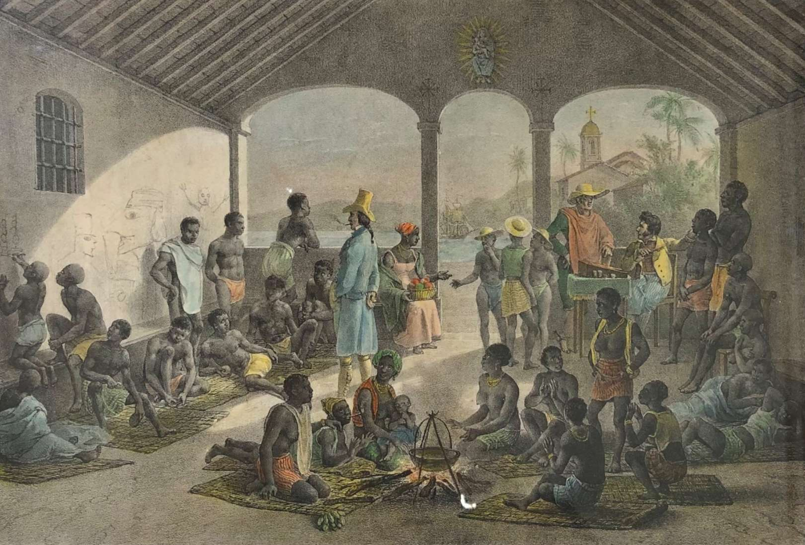
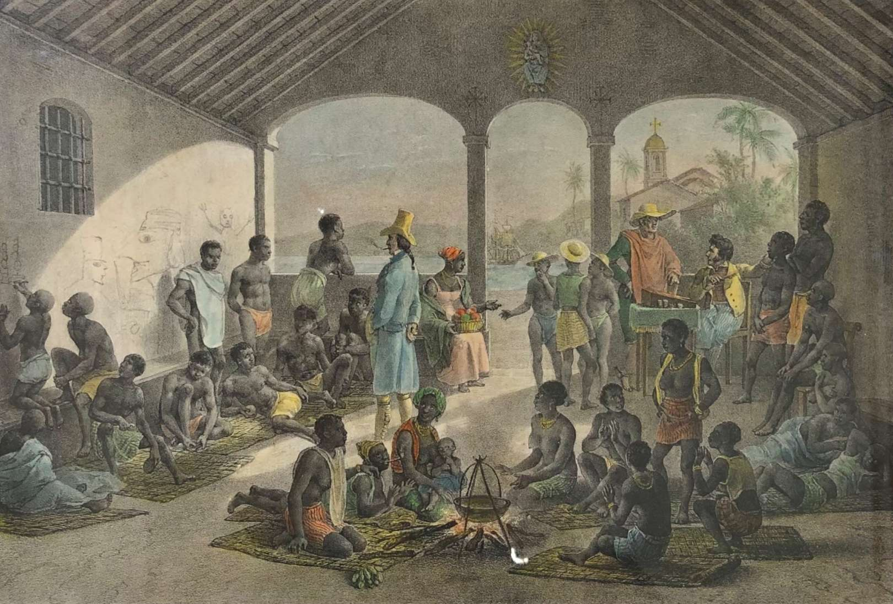

História da escravidão até chegar no Brasil
A escravidão esteve presente em diversas sociedades ao longo da história, sem uma data exata de seu surgimento. Observa-se a prática em civilizações como o Egito Antigo, por volta de 2700-2200 a.C., e no continente africano, a partir de cerca de 700 d.C., com o comércio transaariano. Este comércio consistia em uma rede de rotas comerciais através do Deserto do Saara, conectando a África Ocidental ao Norte da África e ao Mediterrâneo, e perdurou da Antiguidade até o século XIX.
 

A Escravização no Brasil
A escravização no Brasil começou no século XVI e durou mais de trezentos anos, sendo a base da economia colonial. Milhões de africanos foram trazidos em condições desumanas para trabalhar nas lavouras, minas e casas. Apesar da violência e da perda de liberdade, os escravizados resistiram de diversas formas, como nos quilombos e revoltas. A escravidão foi abolida em 1888, mas sem garantir direitos ou condições dignas aos libertos, o que gerou desigualdades que ainda persistem. A cultura africana, porém, deixou uma forte marca na identidade brasileira.